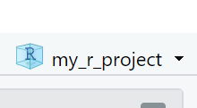
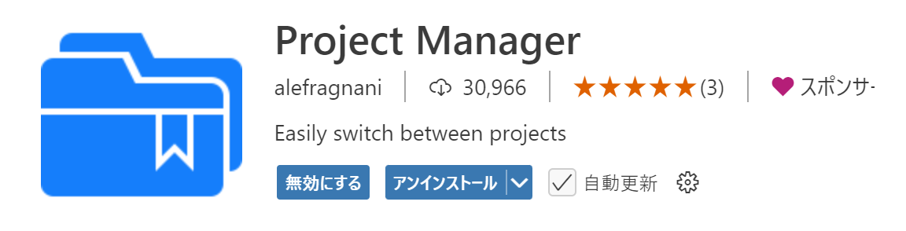
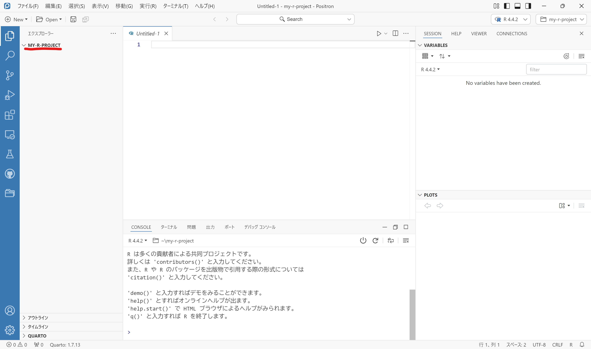
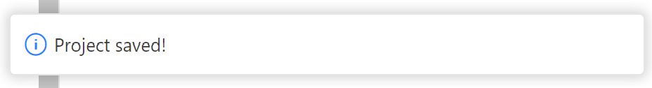

5 プロジェクトを始める
5.1 作業を始めるその前に
Rがインストールできたら早速作業に入りましょう。
しかしその前に、自分がしたい仕事についてどう進めるか考えることをお勧めします。そして、場合によっては（というよりもほとんどの場合において）Rプロジェクトを作成して進めるべきです。
まずRプロジェクトとは何かという話ですが、一言でまとめると「RStudio上で作業するための作業スペース」です。この作業スペースを作成し、その中で作業をすることによって他のフォルダやファイルから作業スペースを隔離し、独立したスペースで仕事をすることができるようになります。
試しに少しコードを打って回す、という程度であればわざわざプロジェクトを作成する必要もないのかもしれませんが、大抵の場合において何らかの計画をもって作業を始めると思います（論文や授業課題等）。
多くの初心者向け書籍やサイトではsetwd()を用いて作業ディレクトリ（作業をするフォルダ）を指定する方法をまず紹介していますが、あえてそれを飛ばし、Rプロジェクトを用いた始め方をご紹介します。
5.2 Rプロジェクトを作成する
Rプロジェクトについて、2025年2月現在ではRStudioのみサポートされています。Positronでもプロジェクトを用いた作業を行うことができますが、その場合はRプロジェクトとは異なる過程を踏むことになります。それは次のセクションでご紹介します。
早速プロジェクトを作成しましょう。流れは以下のようになります。
- RStudioを開きます。
- 続いてウィンドウ右上に「
![]() Project: (None)」と書かれた箇所があるので、そこをクリックします。
Project: (None)」と書かれた箇所があるので、そこをクリックします。 - 一番上に「New Project…」という項目があるのでそれをクリックし、数秒待って出てきたウィンドウから「New Directory」→「New Project」を選択します。
- 「Directory name:」のところには任意のプロジェクト名を入れてください。理想は英語で、スペースは
_で代用していることです（例：life_with_r）。 - 「Create project as subdirectory of:」で作業フォルダを置く場所を選びます。任意の場所で構いませんが、ユーザー直下（例：
C:/Users/yosuke）がわかりやすくてよいと思います。 - その下のチェックボックスは一旦飛ばし、「Create Project」をクリックし、Rプロジェクトを作成します。
すると右上がプロジェクト名に変わっていると思います。また、右下のパネルには.Rprojファイルが作られているでしょう。

これでプロジェクトが作成され、作業場が出来上がりました。この中にデータを入れたりコードファイルを入れたりと、作業を進めていくことになります。
Positronを使っていない方は先のセクションに飛んで大丈夫です。
5.3 Positronでプロジェクトを始める
先述の通り、PositronではRプロジェクトを作ることができないので、別の方法をとります。
とはいうものの、プロジェクト自体はPositron上でも作ることができます。ただ、実際は作業ディレクトリを作成しているに過ぎないので、.Rprojファイルを作成するRStudioとは異なります。
まずはプロジェクト作成に先立ち、プロジェクト管理用の拡張機能を入れましょう。
- 画面左のサイドバーから
をクリックし、検索窓に「alefragnani.project-manager」と入力します。 - 出てきた拡張機能（Project Manager）をインストールします。
するとサイドバーの最下部にProject Managerのアイコンが出てきます。

一旦これで置いておいて、プロジェクトの作成をしましょう。
- 画面右上のフォルダアイコンをクリックし、一番上の「New Project…」をクリックします。
- Project Typeは「R Project」を選択し、次へ進みます。
- 「Project Name」と「Parent Directory」はRStudioの場合と同様に任意の名前、場所を入れ、チェックボックスは空白のまま次へ進みます。
- 使いたいRのバージョンが選択されていることを確認し、ここでもチェックボックスは空白のまま「Create」をクリックします。
- Current WindowかNew Windowは好きな方を選びます1。
すると画面左のパネルにプロジェクト名のフォルダが開かれていると思います。また、右上もフォルダアイコンの右がプロジェクト名に変わっています。

RStudioでは.Rprojファイルを基準にどこが作業ディレクトリなのかを判別できるのですが、このままではファイルが何もないので判断が付きません。そこで活躍するのが先ほどの拡張機能です。
サイドバーからProject Managerのアイコンをクリックし、上部に出てくる「Favorites」にカーソルを合わせると、フロッピーディスク💾のアイコンが出てきます2。これをクリックするとウィンドウ中央最上部にプロジェクト名が出てきてEnterかEscapeかを選択するよう訊かれるので、Enterキーをクリックすると保存することができます。

次回以降、作業ディレクトリを閉じていてもProject Managerから保存したプロジェクトをクリックすれば、プロジェクトのディレクトリに飛んでくることができます。
5.4 プロジェクトを有効活用する
ここまでRStudio、Positronそれぞれでプロジェクトを作成する方法を紹介してきましたが、これだけでは作成する意義がわかりにくいと思います。
実際の作業の流れを確認しながら、プロジェクトのメリットや利便性について確認していきましょう。
5.4.1 素早くプロジェクトを開く
まず第一の利点として、PCを立ち上げてから環境を整えるまでの速さが挙げられます。
RStudioの場合はエクスプローラー（ないしFinder）から.Rprojファイルを開けば、RStudioが立ち上がりプロジェクトを開いた状態に整えることができます。もうここからは作業を始めればよいだけです。もしくはRStudioを立ち上げた後で、右下のファイルパネルから.Rprojファイルをクリックすれば環境を整えることができます。
Positronの場合はまずPositronを立ち上げ、Project Managerから保存しておいたプロジェクトをクリックすれば環境が整います。
このように、まずは作業環境をスピーディーに立ち上げられるというメリットがあります。
5.4.2 作業ディレクトリの統一
続いて作業ディレクトリの統一ができるという点です。
Rを使う際はサブフォルダ（フォルダ内にあるフォルダ）に入っているデータを参照することがよくあると思います。例えば以下のような場合です。
my-r-project/
├── data/
│ ├── dataset1.csv
│ └── dataset2.csv
└── code/
└── analysis.Rこの場合、analysis.Rでdataset1.csvを使いたい場合は、
df <- readr::read_csv("C://Users/yosuke/my-r-project/data/dataset1.csv")というような形で、（Windowsであれば）C://から始まる絶対パスを用いて読み込む必要があります。これは次の2つの意味ででよくありません。
1つ目はシンプルに長いということです。逐一書くには時間がかかるし、コピペするにしても非効率的です。
2つ目は再現可能性に欠けるということです。これは実証研究全般に言えることですが、再現可能な研究というのは非常に重要です。個人単位で考えても一度出た結果をもう一度出力できないのは問題ですし、より広い観点で言えば、パブリッシュした分析結果を他者が実行して同じ結果にならないのは分析の信憑性を大きく損ないます。絶対パスの問題点は、そのパスを他の環境（他のPC等）で用いることができない点にあります。他の人のみならず、もしプロジェクトを含むフォルダを別の場所に移動したとき3、コードがそのままでは自分のPCですら動かなくなってしまいます。
プロジェクトを使用していればそのフォルダが一つの環境として機能するため、場所を移したとしても.Rprojがあるディレクトリからの相対的な位置を考えるだけで済みます。コードもC://Users/yosuke/の部分は省略できますし、まさにこの部分がユーザーによって異なるので、環境の違いによる読み込めない問題を防ぐことができます。
5.4.3 hereパッケージを活用しよう
そこで活躍するのが、hereというRパッケージです。これは、.Rpojがあるディレクトリを認識して相対的なパス、相対パスを使用するのに役立ちます。
まずはパッケージをインストールしておきましょう。
pak::pak("here")続いてプロジェクトを作成したとして、ディレクトリの構造は以下と仮定します。
my-r-project/
├── my-r-project.Rproj
├── data/
│ ├── dataset1.csv
│ └── dataset2.csv
└── code/
└── analysis.Rそして、analysis.R内でdataset1.csvファイルを読み込むには以下のようにします。
# here::here("data", "dataset1.csv")も可
df <- readr::read_csv(here::here("data/dataset1.csv"))あるいはあらかじめライブラリを読み込んで以下のようにもできます（こちらの方が一般的かもしれません）。
library(tidyverse)
library(here)
df <- read_csv(here("data/dataset1.csv"))先ほどと比べてどうでしょうか。コードも短縮でき、なおかつ環境によって左右される絶対パスとは異なりワーキングディレクトリ内の相対パスで指定できています。これであれば環境を移した際にも同じコードで分析を進めることができます。
5.4.4 さらに活用
例えば読み込みたいファイルがあるフォルダと、作成したファイルを保存したいフォルダが分かれているようなことは多々あります。その際には、あらかじめhereを活用して対象となるフォルダをオブジェクトとして保存しておくことができます。
my-r-project/
├── my-r-project.Rproj
├── data/
│ ├── dataset1.csv
│ └── dataset2.csv
├── output/ # 作成したファイルを保存するフォルダ
│ └── result1.csv
└── code/
└── analysis.Rこのような構造であるとして、result1.csvをoutput内に出力したいわけです。
このとき、まずはhere::here()を使ってあらかじめデータを読み込むフォルダと書き出すフォルダを指定します。
dir_data <- here::here("data")
dir_out <- here::here("output")このdir_dataとdir_outには、該当するフォルダまでのパスが保存されている状態です。そしてこれらとfile.path()と組み合わせて使います。file.path()はファイルへのパスを構築するための関数です。
読み込む際は
df <- readr::read_csv(file.path(dir_data, "dataset1.csv"))書き出す際は
# resultは結果を格納したオブジェクト
readr::write_csv(result, file.path(dir_out, "result1.csv"))のようにして用いることができます。間に別のフォルダを挟む際はfile.path(dir_out, "results", "result1.csv")のようにもできます4。
こうすることで、複数のフォルダを使い分ける際はさらに効率化することができます。これぐらいだとあまり恩恵を感じないかもしれませんが、ディレクトリの構造が複雑で、相対パスすら長くなるような場合には有用です。
Rプロジェクト × hereで効率的なプロジェクト管理をしていきましょう。